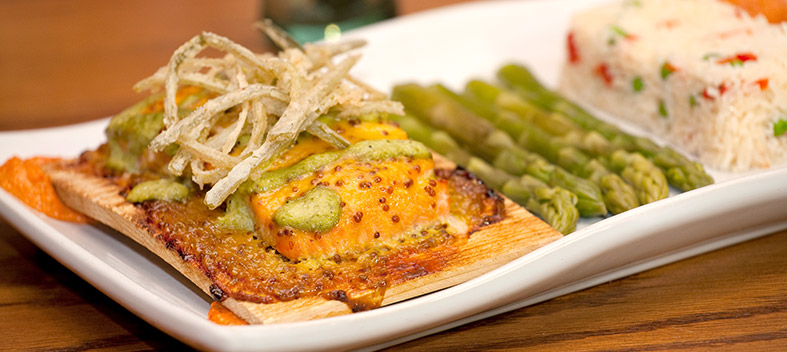

CHATHAM HOUSE SUNSET MENU
Served nightly from 4:30 to 7 p.m., excluding holidays, through October 31 and from 5 to 6 p.m. beginning November 1.

Served nightly from 4:30 to 7 p.m., excluding holidays, through October 31 and from 5 to 6 p.m. beginning November 1.